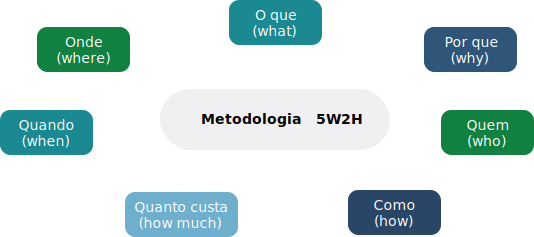

TÓPICO 1
DESCORTINANDO A LIDERANÇA: O QUE É PRECISO SABER SOBRE OS LÍDERES?
TÓPICO 1
DESCORTINANDO A LIDERANÇA: O QUE É PRECISO SABER SOBRE OS LÍDERES?
Se você está enfrentando problemas com sua equipe e tem dificuldades para fazer um diagnóstico da situação, a alternativa é utilizar ferramentas gerenciais. Uma sugestão é a ferramenta 5W2H, que possibilita a análise de uma situação-problema, bem como a criação de um plano de ação para facilitar a intervenção. A denominação vem da abreviação das palavras em inglês: what, why, where, who, when, how e how much.
Clique nas etapas para conhecê-las.
What - O quê?
Refere-se ao entendimento do que aconteceu, o problema em análise. A partir disso, define-se o que será feito e quais ações serão implementadas.
Why - Por quê?
Refere-se à análise do porquê a situação-problema aconteceu ou, pensando no plano de ação, por que é importante resolvê-la e por que tais ações deverão ser colocadas em prática.
Who - Quem?
Refere-se à identificação do responsável no caso do diagnóstico do problema ou quem será o responsável pela implementação da ação.
A corresponsabilização faz com que as pessoas se sintam valorizadas e envolvidas no programa, no projeto ou na ação a ser desenvolvida.
How - Como?
Refere-se ao entendimento de como ocorreu a situação-problema ou como será realizada a implementação da ação.
How much - Quanto custa?
Refere-se ao oferecimento de uma perspectiva dos custos referentes aos investimentos.
When - Quando?
Refere-se à identificação de quando a situação-problema aconteceu ou quando as ações serão implementadas.
Where - Onde?
Refere-se à descrição do local onde ocorreu a situação-problema ou onde a ação será desenvolvida.